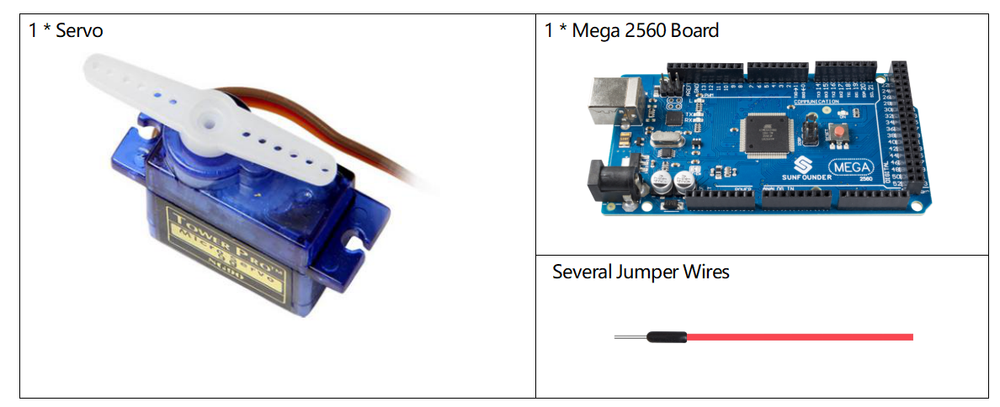
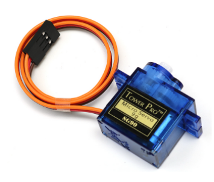
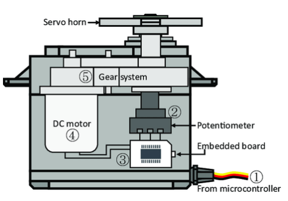
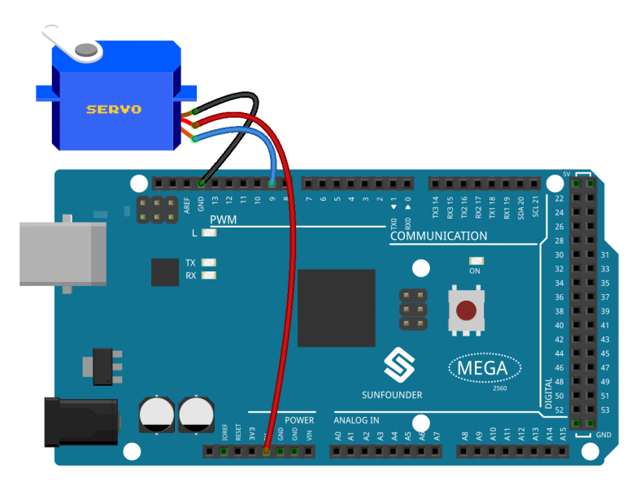
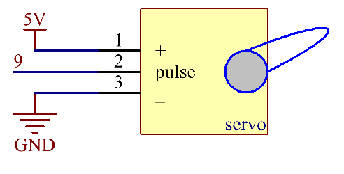

2.12 Servo¶
Überblick¶
In this course, you will learn about servo. Servo is a drive whose position (angle) can be adjusted and maintained, or a rotary actuator that can precisely control the angular position. Derzeit wird es häufig in hochwertigen ferngesteuerten Spielzeugen wie Flugzeugen, U-Booten, Telerobotern usw. verwendet.
Erforderliche Komponenten¶
Komponenteneinführung¶
Ein Servo besteht im Allgemeinen aus folgenden Teilen: Gehäuse, Welle, Getriebe, Potentiometer, Gleichstrommotor und eingebettete Platine.
Das funktioniert so: Der Mikrocontroller sendet das PWM-Signal an den Server, und dann empfängt die im Server eingebettete Karte das Signal über den Signalstift und steuert die Drehung des internen Motors. Infolgedessen treibt der Motor das Getriebesystem an und motiviert dann die Welle nach dem Abbremsen. Die Welle und das Potentiometer des Servos sind miteinander verbunden. Wenn sich die Welle dreht, treibt sie das Potentiometer an, sodass das Potentiometer ein Spannungssignal an die eingebettete Platine ausgibt. Dann bestimmt das Board die Drehrichtung und -geschwindigkeit basierend auf der aktuellen Position, sodass es genau an der richtigen Position wie definiert anhalten und dort halten kann.
Der Winkel wird durch die Dauer eines Impulses bestimmt, der an den Steuerdraht angelegt wird. Dies wird als Pulsweitenmodulation bezeichnet. Das Servo erwartet alle 20 ms einen Impuls. Die Länge des Impulses bestimmt, wie weit sich der Motor dreht. Zum Beispiel bringt ein Impuls von 1.5 ms den Motor in die 90-Grad-Position (neutrale Position).
Wenn der an das Servo gesendete Impuls weniger als 1.5 ms beträgt, dreht sich das Servo in eine Position und hält seine Abtriebswelle in einem bestimmten Winkel gegen den Uhrzeigersinn vom Neutralpunkt.
Wenn der Impuls breiter als 1.5 ms ist, tritt das Gegenteil auf. Die minimale Breite und die maximale Impulsbreite, die das Servo anweisen, sich in eine gültige Position zu drehen, sind Funktionen jedes Servos. Im Allgemeinen ist der minimale Impuls ungefähr 0.5 ms breit und der maximale Impuls ist 2.5 ms breit.

Fritzing Circuit¶
In diesem Beispiel verwenden wir den PWM-Pin 9, um den Servo anzusteuern, und verbinden den orangefarbenen Draht des Servos mit dem PWM-Pin 9, den roten mit 5 V und den braunen mit GND.
Schematische Darstellung¶
Code¶
Sobald Sie die Codes auf die Mega2560-Karte hochgeladen haben, können Sie sehen, wie sich der Servoarm im Bereich von 0 ° bis 180 ° dreht.
Code-Analyse¶
Durch Aufrufen der Bibliothek Servo.h können Sie das Servo problemlos fahren.
#include <Servo.h>
Bibliotheksfunktionen:
Servo
Erstellen Sie ein Servo-Objekt, um ein Servo zu steuern.
uint8_t attach(int pin);
Verwandeln Sie einen Stift in einen Servotreiber. Ruft pinMode auf. Gibt bei einem Fehler 0 zurück.
void detach();
Lösen Sie einen Stift vom Servoantrieb.
void write(int value);
Stellen Sie den Winkel des Servos in Grad von 0 bis 180 ein.
int read();
Gibt den mit dem letzten eingestellten Wert zurück.
bool attached();
Geben Sie 1 zurück, wenn das Servo gerade angeschlossen ist.